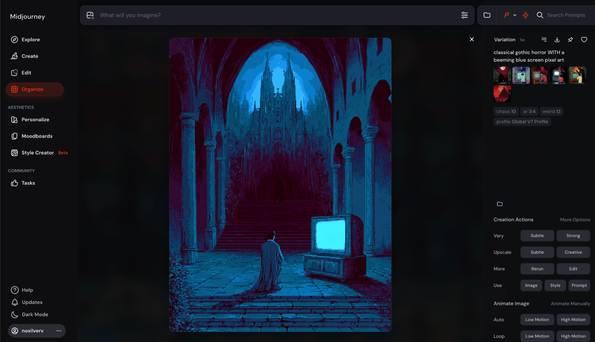
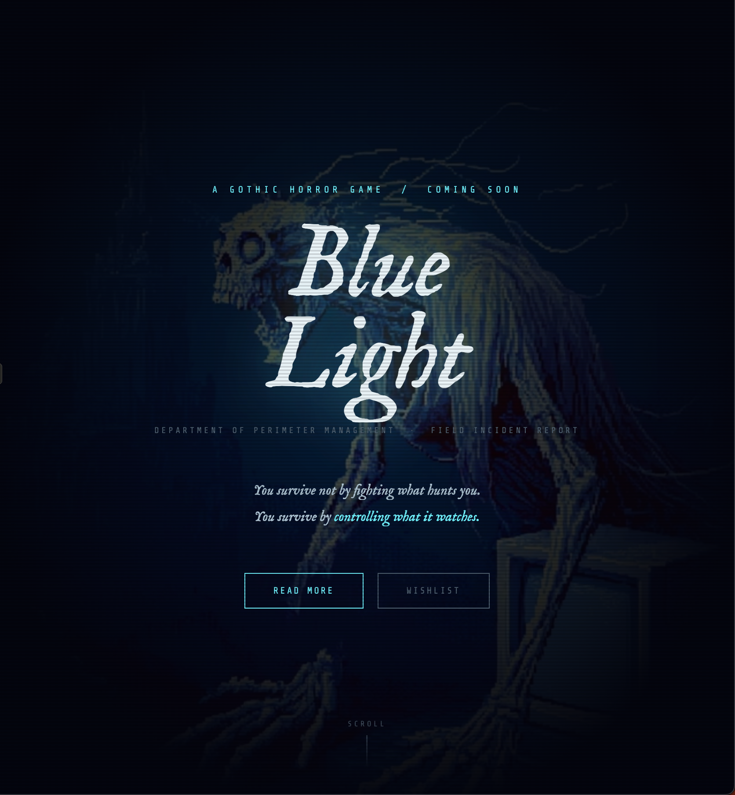

Blue Light
I’ve talked a bit about how my dreams and midjourney have bled into each other and how that eventually led me to images of traditional gothic horror but where screens were, somehow, for some reason, present.

“classical gothic horror WITH a beeming blue screen pixel art”. Midjourney.
Turning your dreams into images — I knew Dali had done this. But had anyone turned it into games? I did a quick search and it turned out that yes — people had. https://x.com/nosilverv/status/2032946584002892241
I conversed with Claude. How could this make sense? I needed a narrative, not just a cool image. And my ideas for it were, frankly, bad. “Maybe we’re in a multiverse mixing situation that somehow mixed the gothic and modern screens timelines?” Claude’s idea was better: just don’t explain it. They’re just there, that’s just how that world works.
Which, honestly… based.
I really liked not just the idea of juxtaposing monsters and screens but maybe the monsters were entranced by the screens? I quickly saw the hero running around turning on screens to bait the monsters away from it. A weird AI-age Mario except he’s not a plumber but an electrician?

“horde of zombies entranced by tv screen emitting blue light pixel art”. Midjourney.
But why? Why would they be entranced? Again I needed a story, if it was gonna be a game…
Claude came up with a bunch of ideas: maybe they’re communicating with another dimension or being. Normal TV. Static. And the one i liked the most, but… you have to play the game to know it.
Ofc after all of this I couldn’t help myself. I could take a page from Borges: do you need to write a book when you can just write a book review? Do I need to make a game when Claude can just make a mockup webpage for it?
Ofc Claude oneshotted it: https://claude.ai/chat/4c2e20bd-0d4a-4352-90a6-da7655f7da46
